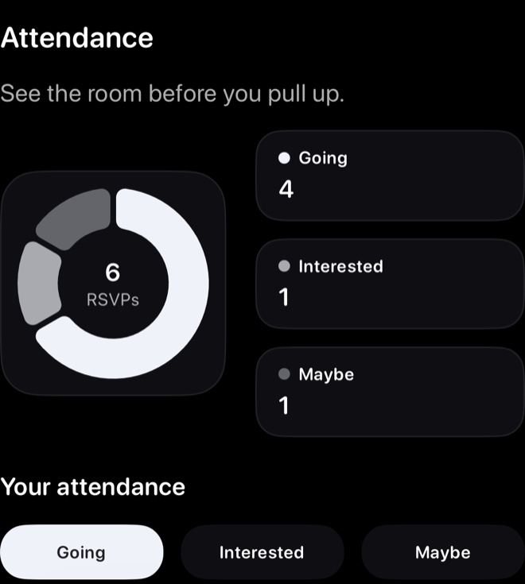
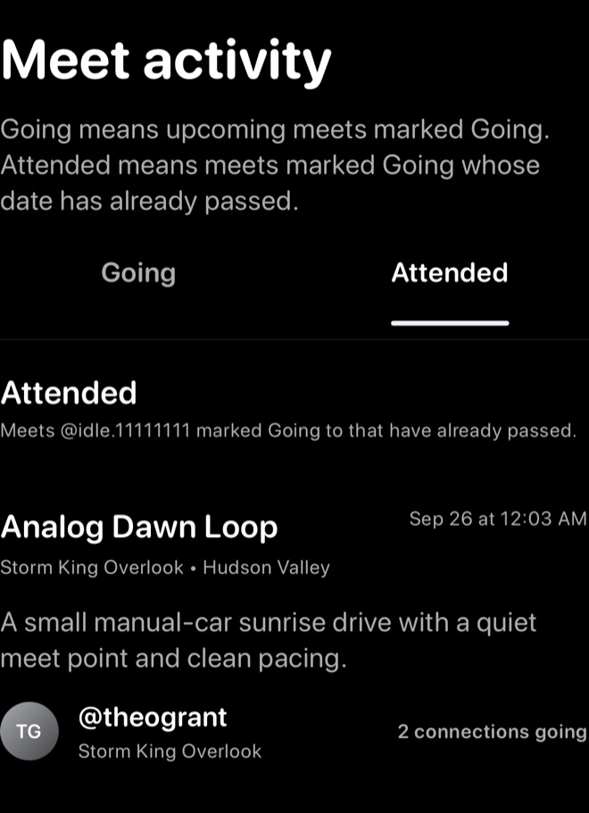

Screenshots show sample content in a local prerelease build, Idle 1.3.0 (1), using Dark appearance and BMW Alpine White (M3). Your app may look different. Select an image to view the full capture.
Steps
- Open the meet from Home, Search, Activity, a link, or a group.
- Review the meet details before choosing an RSVP.
- Under Your attendance, choose Going, Interested, or Maybe.
- Return to the meet later if you need to change your choice.


What to expect
Meets you marked Going can appear in profile history after the meet time passes. Visibility may still depend on profile privacy, meet visibility, group access, and blocking.
On Profile, tap the Attended count to open Meet activity. Use its Going and Attended tabs to review upcoming and past meet activity.


Troubleshooting
- RSVP will not saveCheck your connection, reopen the meet, and try again.
- Count looks wrongTell support the meet title, date, and which RSVP you selected.
- Meet disappearedThe meet may have passed, been canceled, or no longer be visible to your account.
Contact support
If RSVP still does not work, email support@idlemeets.com with the meet title, date, your username, and a screenshot if possible.